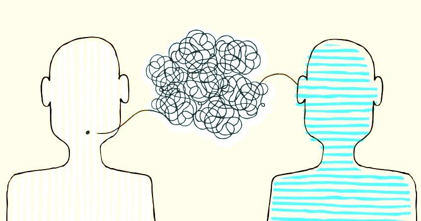

Análisis del proceso comunicativo
 El proceso comunicativose forma de varias partes, en este video analizamos lo siguiente…El emisor de este video son todas las personas que participan en las preguntas, pues son los que transmiten el mensaje de igualdad hacia el receptor. La persona que hace las preguntas y dirige el video, también es emisor, pues es el primordial ya que es el que con sus preguntas también hace cuestionarse a todo tipo de receptor, de la misma forma, el receptor según lo visto en el vídeo, el papel de receptor, lo interpretan todas las personas a las que el presentador les preguntaba, es decir, los de altos ingresos, los que viven al día, aquellos en los que confiamos (enfermeras, personal de salud), los que tratamos de evitar, los que son nuevos en la ciudad y los que ya tienen mucho ahí, las personas del campo y las que nunca han visto una vaca (haciendo referencia a los jóvenes de la ciudad), los religiosos y los que confían en sí mismos.
Todas estas personas desarrollan a la perfección el rol del receptor, esto es debido a que cuando el presentador transmite la información, que en este caso son las preguntas, los demás la reciben, la procesan y responden a ella. Como se ve en el video, la manera en la que ellos contestan a los cuestionamientos es pasando al frente si han hecho lo que se les está preguntando, generando así una comunicación ideal, en donde se da una información y esta se responde adecuadamente, mientras que, su código se trasmite a través de las emociones del porque están en ese lugar, los gestos de las personas cuando pasan al frente al escuchar la pregunta, etc.
Que hablan el mismo idioma y los que hacen el video, como codificaron el significado de la pregunta para que los demás puedan entenderle y darle acceso a su pregunta, la manera de señas que les hayan dicho para que pasaran al frente para que las demás personas los vieran y entendieran la situación. Su lenguaje en danés y su escritura en latín, al mismo tiempo, el ruido no propicia la comunicación, sino que la perturba e interfiere en el proceso
También llamados barreras de comunicación, son los que impiden al emisor dar el mensaje y al receptor comprenderlo. En este video podemos destacar que no existe ningún ruido o ninguna barrera de comunicación que interfiera con el este proceso, ya que el emisor, sin ningún problema, puede externar las preguntas correspondientes, y los receptores la reciben bien para poder dar una respuesta. La que se podría considerar como barrera sería la filosófica, ya que observamos que hay una gran variedad de personas, todas con un pensamiento totalmente diferente, sin embargo esto no afecta en la comunicación porque la comunicación se adecúa a todos y es el fin del experimento que se hace, que hay cosas en común entre personas con distintas personalidades, cabe destacar, la retroalimentación la encontramos al final donde nos dice que todos somos diferentes pero a la vez tan iguales al juntar diferentes tipos de personas que podemos pensar que son totalmente diferentes pero al ver las diferentes situación vemos que podemos ser tan iguales y tenemos más cosas en común de lo que pensamos de personas diferentes, así mismo, el experimento se realiza en un espacio cerrado, donde cada sector de personas tendrá la confianza de poder responder sin ser juzgados.
Ahí, se les separa de acuerdo a lo que se les define: ‘’ ¿Quién gana menos?’’ ‘’ ¿Quién gana más?, entre otras causales; se les preguntan cosas que parecerían cotidianas, pero cada persona se ‘’veía’’ diferente a lo que pensamos como algo de lo más sencillo. En 2017, un estudio por Global Early Adolescent Study reveló que los niños entre los 10 y 14 años son los más propensos a ser manipulados por lo tanto, la educación que reciben desde casa es de vital importancia que sea libre de prejuicios y estereotipos, no obstante, El mensaje de este video es que realmente todos tenemos cosas en común, aunque realmente no lo parezca siempre las hay o como ahí mismo decía “tenemos más en común, de lo que pensamos”, recién empecé a ver el video y realmente no le entendí del todo, porque los ponían en diferentes grupos de personas que a simpe vista se veían muy distintos, entonces es ahí cuando veo que el mensaje también es que no hay que buscar en las diferencias, enfocarte en las similitudes, que es lo que hace el video, todos terminaban mezclados cuando empieza a hacerles las preguntas, es un video que se puede enseñar a niños tanto como adultos, pero no siempre todos vamos a tener la misma percepción del video, ahora bien, el canal es un grupo de personas se reúnen en una sala y se dividen por detalles que, en principio, los definen. Los que ganan más y los que ganan menos; la gente de ciudad y la de campo; los inmigrantes y los locales.
Todos ellos se mantienen encerrados en sus propias fronteras Este tipo de videos se transmitió por el canal de televisión danés TV2 en el cual por el emotivo mensaje que se da en este Varios perfiles en Facebook han compartido el vídeo en inglés en los últimos días, logrando millones de reproducciones que han ayudado a viralizar el vídeo fuera de las fronteras de Dinamarca. La grabación original de la cadena de televisión pública también ha alcanzado una gran repercusión en esta red social.
A pesar de emitirse solo en danés, con más de cinco millones de visitas en dos semanas. Este vídeo promocional, lanzado en redes el 27 de enero, coincidió con el cierre temporal de las fronteras de Estados Unidos para los inmigrantes de siete países de mayoría musulmana por parte de Donald Trump.
Puedes ver el video analizado a continuación...